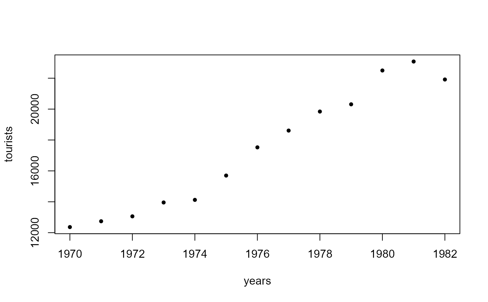

R/bartelsRankTest.R
bartelsRankTest.RdA nonparametric test for randomness of a sequence (so it tests whether data is sampled randomly from an underlying population), based on the ratio of the mean square successive difference of ranks to the rank variance.
a numeric vector containing the observations.
a character string specifying the alternative
hypothesis, must be one of "two.sided" (default), "trend"
or "oscillation".
a character string specifying the method used to compute
the p-value, must be one of "auto" (default), "normal" or
"beta". With "auto" the beta approximation is used for
sample sizes up to 100 and the normal approximation otherwise.
A list with class "htest" containing the following
components:
statisticthe value of the normalized test statistic.
parameter, nthe sample size, after the removal of missing values.
p.valuethe p-value of the test.
alternativea character string describing the alternative hypothesis.
methoda character string indicating the test performed.
data.namea character string giving the name of the data.
rvnthe value of the RVN statistic (not shown on screen).
nmthe value of the NM statistic, the numerator of RVN (not shown on screen).
muthe mean value of the RVN statistic (not shown on screen).
varthe variance of the RVN statistic (not shown on screen).
Data must at least be measured on an ordinal scale. The RVN test statistic is $$RVN=\frac{\sum_{i=1}^{n-1}(R_i-R_{i+1})^2}{\sum_{i=1}^{n}\left(R_i-(n+1)/2\right)^2}$$ where \(R_i=rank(X_i), i=1,\dots, n\). It is known that \((RVN-2)/\sigma\) is asymptotically standard normal, where \(\sigma^2=\frac{4(n-2)(5n^2-2n-9)}{5n(n+1)(n-1)^2}\).
By using the alternative "trend" the null hypothesis of randomness
is tested against a trend. By using the alternative "oscillation"
the null hypothesis of randomness is tested against a systematic
oscillation.
Missing values are silently removed.
Bartels test is a rank version of von Neumann's test, see
vonNeumannTest.
Based on code by Frederico Caeiro previously published in the randtests package, adapted to conform to package standards.
Bartels, R. (1982) The Rank Version of von Neumann's Ratio Test for Randomness, Journal of the American Statistical Association, 77 (377), 40-46.
Gibbons, J.D. and Chakraborti, S. (2003) Nonparametric Statistical Inference, 4th ed., New York: Marcel Dekker (pp. 97-98).
von Neumann, J. (1941) Distribution of the ratio of the mean square successive difference to the variance. Annals of Mathematical Statistics 12, 367-395.
Other test.timeseries:
adfTest(),
kpssTest(),
runsTest(),
vonNeumannTest()
## Example 5.1 in Gibbons and Chakraborti (2003), p.98.
## Annual data on total number of tourists to the United States
## for 1970-1982.
years <- 1970:1982
tourists <- c(12362, 12739, 13057, 13955, 14123, 15698, 17523, 18610,
19842, 20310, 22500, 23080, 21916)
plot(years, tourists, pch=20)

bartelsRankTest(tourists, alternative="trend", method="beta")
#>
#> Bartels rank test of randomness (beta approximation)
#>
#> data: tourists
#> z = -3.6453, n = 13, p-value = 1.21e-08
#> alternative hypothesis: trend
#>
# Bartels rank test of randomness (beta approximation)
#
# data: tourists
# z = -3.6453, n = 13, p-value = 1.21e-08
# alternative hypothesis: trend
## Example in Bartels (1982).
## Changes in stock levels for 1968-1969 to 1977-1978 (in $A million),
## deflated by the Australian gross domestic product (GDP) price index
## (base 1966-1967).
x <- c(528, 348, 264, -20, -167, 575, 410, -4, 430, -122)
bartelsRankTest(x, method="beta")
#>
#> Bartels rank test of randomness (beta approximation)
#>
#> data: x
#> z = 0.083357, n = 10, p-value = 0.9379
#> alternative hypothesis: nonrandomness
#>